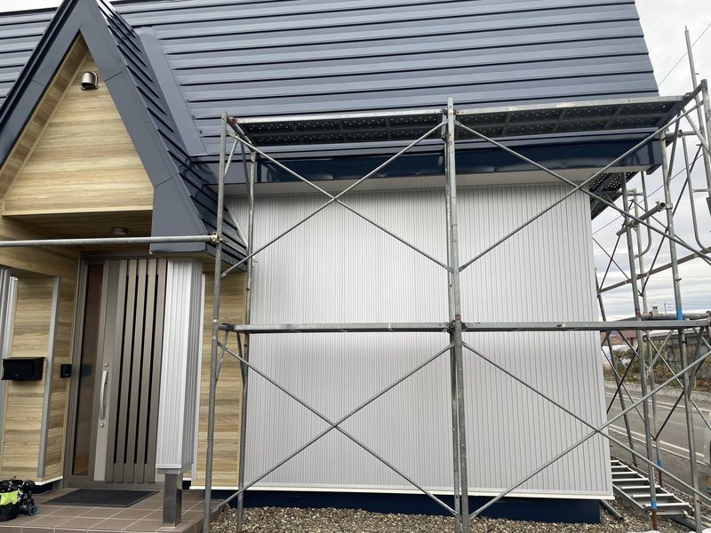
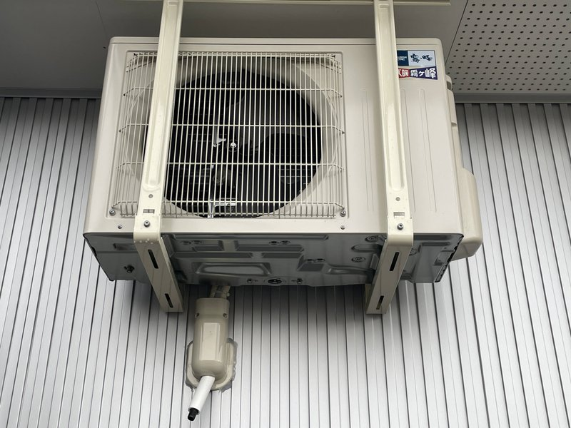
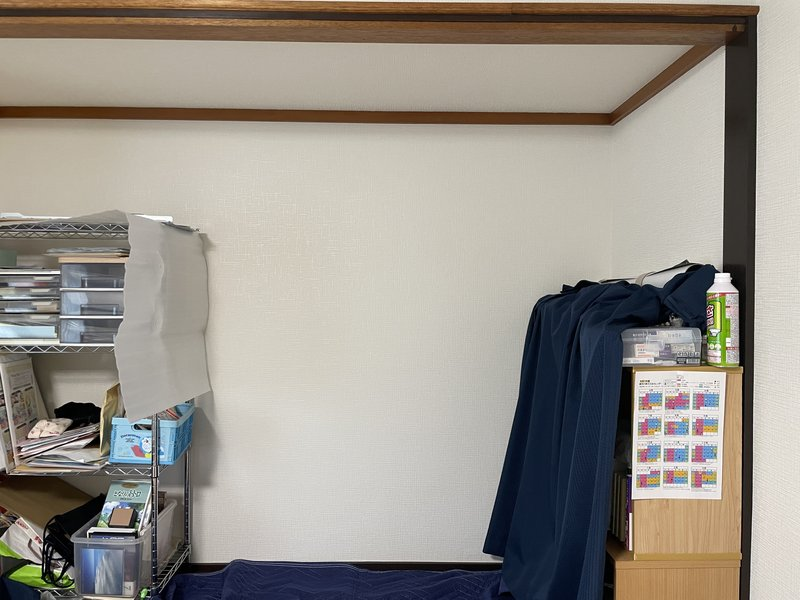
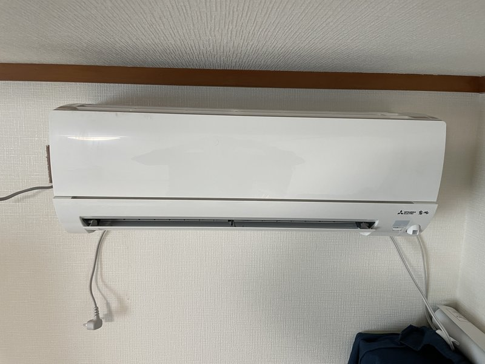
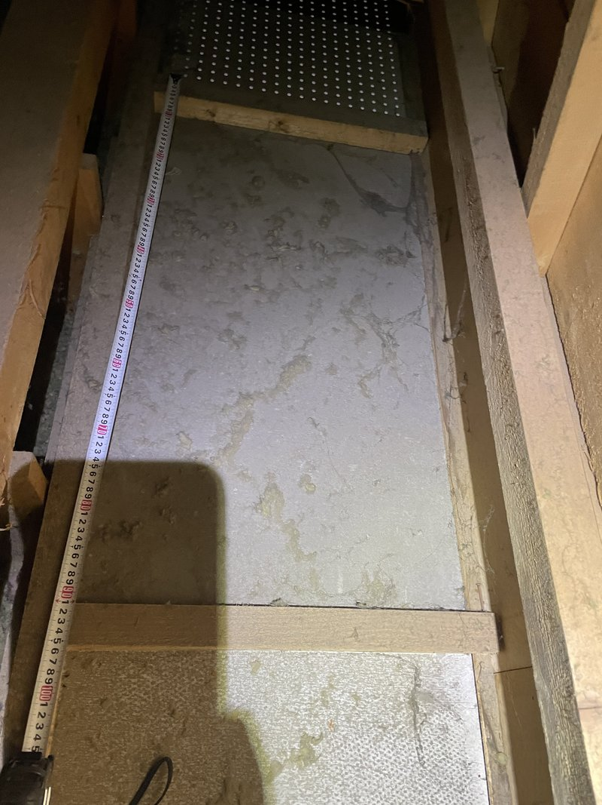
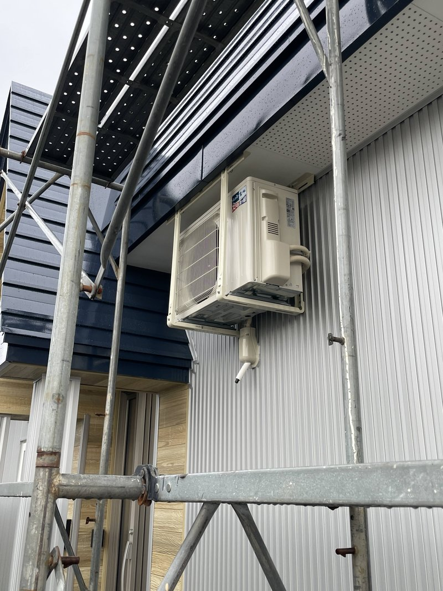

訓子府町で三菱ズバ暖を軒天天吊り施工｜リフォーム外壁を傷つけない特殊エアコン取付事例
リフォーム中のお客様宅へエアコンを新規取付した事例です。外壁を新調したばかりで「外壁に穴を開けたくない・室外機を取り付けたくない・配管ダクトを下ろしたくない」というご要望があり、室外機を軒天 (のきてん) に天吊りする特殊施工をご提案。配管も電気配線もすべて天井裏経由で隠蔽配線し、外壁を完全無傷で仕上げました。


施工概要
| 施工日 | [要入力] |
|---|---|
| 地域 | 北海道常呂郡訓子府町 |
| 建物 | 戸建てリフォーム中 (室内リフォーム完了・外壁リフォーム中) |
| 工事内容 | エアコン新規取付 + 軒天天吊り室外機 + 専用回路新設 + 天井裏隠蔽配線 |
| 機種 | 三菱電機 ズバ暖霧ヶ峰 |
| 追加工事 | 軒天天吊り金具設置、軒天裏木下地造作、分電盤からの専用回路新設、配管・電気配線の完全隠蔽 |
| 工期 | [要入力] |
| 経路 | ミツモア経由でのご依頼 |
お客様のご要望
「家のリフォーム中なんです。室内のリフォームは終わって、今は外壁のリフォームをしているところで。せっかく外壁を新しくしたので、外壁に穴を開けたり、外壁に室外機を取り付けたり、エアコンのダクトを外壁に付けて下まで下ろすとか、そういうのもあまりしたくないという気持ちがあるんです。室外機を、なんとか軒天 (のきてん) の起点から吊り下げるような形で施工できませんか？」
施工のポイント
外壁を傷つけない「軒天天吊り施工」をご提案
通常のエアコン取付では、外壁にコアドリルで配管穴を開け、外壁面に室外機を架台で取り付け、配管ダクト (化粧カバー) を外壁に這わせて下ろします。しかし今回は外壁をリフォームで新調したばかりで、お客様としては絶対に傷をつけたくないというご要望。そこで、室外機を軒天 (屋根の外壁から張り出した部分の天井) に吊りボルトで天吊りする方法をご提案しました。配管も電気配線もすべて天井裏 (屋根裏) 経由で取り回し、外壁には一切手を加えない設計です。
リフォーム大工と連携、軒天裏に荷重支持の木下地を新規造作
室外機 (約30-40kg) を軒天から吊り下げるには、その荷重を確実に支える下地が必要です。リフォームを手がけていた大工さんに直接ヒアリングして軒天の内部構造を確認し、天井裏に登って吊りボルトを固定するための木の下地材を新たに張り巡らせる加工を行いました。「吊りボルトを垂らして荷重がかかっても大丈夫」な強度を確保するための事前造作です。この工程が今回の施工で最も時間と神経を使った部分でした。
配管・電源を完全隠蔽配線、外壁は完全無傷で仕上げ
エアコン専用電源もこの住宅にはありませんでした。分電盤から天井裏を通して隠蔽配線でエアコン専用回路を新設。冷媒配管とドレンホースも軒天 → 天井裏 → 室内機背面の経路で配管し、外壁を一切貫通させない施工です。室内側でも配線は壁内に納め、見える部分はエアコン本体周辺だけ。お客様自慢の新しい外壁の景観を完全に守りました。
吊りボルト + 天吊り金具で安全に室外機を支持
事前に造作した軒天裏の木下地に、寸切りの吊りボルトを垂直に挿入・固定。軒天面に吊りボルトの先端を露出させ、専用の天吊り金具で室外機を確実に支持しました。地震や風圧、長期荷重にも耐える設計で、お客様が安心して長年使い続けられる施工です。
寒冷地仕様「三菱ズバ暖霧ヶ峰」を選定
訓子府町は北海道オホーツク総合振興局管内の内陸町で、冬季は氷点下20℃を下回ることも珍しくない厳しい寒冷地です。エアコンも寒冷地仕様でなければ暖房能力が不足します。三菱電機の寒冷地仕様シリーズ「ズバ暖霧ヶ峰」は外気温-25℃でも暖房運転を維持できる設計で、訓子府町の冬を快適に過ごしていただけます。
施工の様子
ビフォー・アフター
室内機 (リフォーム済み室内壁 → 三菱ズバ暖設置)


軒天裏の下地造作 → 軒天天吊り室外機全景


施工工程
完成写真
「外壁を傷つけずにエアコンを設置したい」「変わった場所への設置を相談したい」
そんなご要望もお気軽にどうぞ
お客様の声
「理想通りな仕上がりで、非常に喜んでいます。外壁を新しくしたばかりで、どうにか外壁を傷つけずに設置できないかとずっと考えていたんです。軒天天吊りという方法を提案いただき、しかも完成してみたら本当に外壁が無傷のまま、室外機もしっかり吊られていて感動しました。お願いして本当によかったです。」
— 訓子府町 小林様
担当者コメント
担当スタッフ
今回のお客様はミツモア経由でご依頼をいただきました。最初にお話を伺った時点で「リフォームしたばかりの外壁を傷つけたくない」という強いご要望があり、通常の壁面設置では対応できない案件と判断しました。室外機を軒天 (のきてん) から吊り下げる「軒天天吊り施工」は、エアコン取付の中でも特殊な部類に入りますが、当店では過去にも対応経験があり、お引き受けすることにしました。
一番大変だったのは、軒天と天井裏での強度確保のための加工・施工です。室外機は 30-40kg ある重量物で、地震や強風にも長年耐え続ける必要があります。リフォームを担当されていた大工さんに直接お会いして軒天の内部構造を細かく確認し、天井裏に登って吊りボルトを固定するための木下地を新たに張り巡らせました。荷重がかかっても下地が抜けないよう、固定箇所を分散させて荷重を逃がす設計を意識しました。
エアコン専用電源もこの住宅にはなかったため、分電盤から天井裏を通して隠蔽配線で専用回路を新設。室内・室外ともに、見える配線・配管が最小限になるように施工しました。お客様から「理想通りな仕上がり」と非常に喜んでいただけて、特殊施工の難しさが報われた現場でした。
北見市・近郊エリアの他の施工事例


{kind=link}
{kind=link}
{kind=link}
{kind=link}
{kind=link}
{kind=link}
{kind=link}
{kind=link}
{kind=link}
{kind=link}
訓子府町・北見市近郊でエアコン工事をご検討中ですか？
お見積り無料。エアコンの購入から取付・電源工事までワンストップ対応。
特殊施工 (軒天天吊り・隠蔽配線・寒冷地仕様) もご相談ください。訓子府町・北見市・網走市他、オホーツク管内に出張対応。
受付時間: 9:00〜19:00（年中無休）